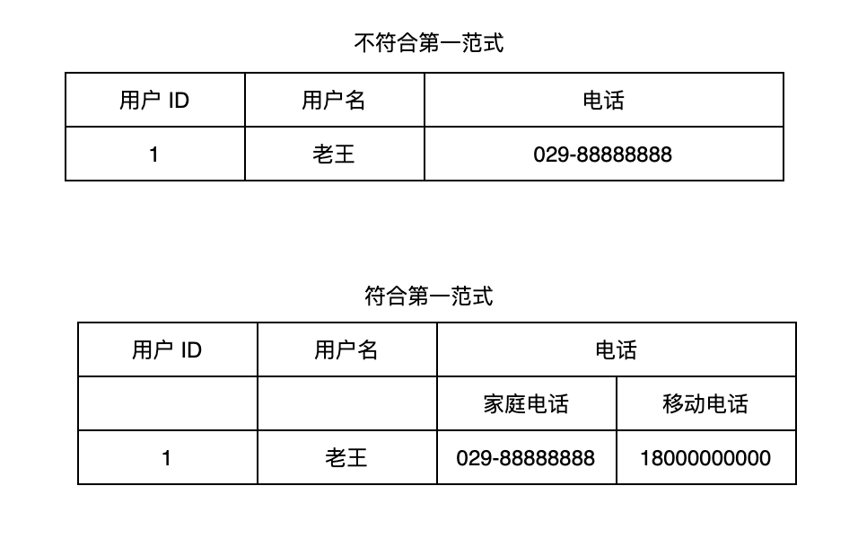

关系数据库（Relational Database）是建立在关系模型基础上的数据库，借助于几何代数等数学概念和方法来处理数据库中的数据。所谓关系模型是一对一、一对多或者多对多等关系，常见的关系型数据库有 Oracle、SQL Server、DB2、MySQL 等。
而文档型数据库是一种非关系型数据库，非关系型数据库（Not Only SQL，NoSQL）正好与关系型数据库相反，它不是建立在“关系模型”上的数据库。文档型数据库的典型代表是 MongoDB。
我们本课时的面试题是，关系型数据库和文档型数据库有什么区别？
典型回答
关系型数据库属于早期的传统型数据库，它有着标准化的数据模型，以及事务和持久化的支持、例如，关系型数据库都会支持的 ACID 特性，也就是原子性（Atomicity）、一致性（Consistency）、隔离性（Isolation）和持久性（Durability），具体含义如下。
- 原子性（Atomicity）：是指一个事务中的所有操作，要么全部完成、要么全部不完成，不会存在中间的状态。也就是说事务在正常的情况下会执行完成；异常的情况下，比如在执行的过程中如果出现问题，会回滚成最初的状态，而非中间状态。
- 一致性（Consistency）：是指事务从开始执行到结束执行之间的中间状态不会被其他事务看到。
- 隔离性（Isolation）：是指数据库允许多个事务同时对数据进行读写或修改的能力，并且整个过程对各个事务来说是相互隔离的。
- 持久性（Durability）：是指每次事务提交之后都不会丢失。
关系型数据库一般遵循三范式设计思想，具体内容如下。
第一范式（The First Normal Form，1NF）：要求对属性的原子性，也就是说要求数据库中的字段需要具备原子性，不能再被拆分。
比如，用户表中有字段：用户 ID、用户名、电话；而其中电话又可以分为：家庭电话和移动电话等。因此，此表不符合第一范式，如下图所示：

第二范式（The Second Normal Form，2NF）：例如订单详情表有这些字段：订单 ID、产品 ID、产品名称、产品单价、折扣。其中，订单 ID 和产品 ID 为联合主键，但这个表中的产品名称和产品单价两个字段只依赖产品 ID，和订单 ID 就没有任何关系了，因此这个表也不符合第二范式。
我们可以把原来的订单表拆分为订单表和产品表，其中订单表包含：订单 ID、产品 ID、折扣等字段；而产品表包含：产品 ID、产品名称、产品单价等字段。这样就消除了产品名称和产品单价多次重复出现的情况了，从而避免了冗余数据的产生。
第三范式（The Third Normal Form，3NF）：想要满足第三范式必须先满足第二范式，第三范式要求所有的非主键字段必须直接依赖主键，且不存在传递依赖的情况。
例如，有一个学生表中包含了：学生 ID、姓名、所在学院 ID、学院电话、学院地址等字段。这个表的所有字段（除去主键字段）都完全依赖唯一的主键字段（学生 ID），所以符合第二范式。但它存在一个问题，学院电话、学院地址依赖非主键字段学院 ID，而不是直接依赖于主键，它是通过传递才依赖于主键，所以不符合第三范式。
我们可以把学生表分为两张表，一张是学生表包含了：学生 ID、姓名、所在学院 ID 等字段；另一张为学院表包含了：学院 ID、学院电话、学院地址等字段，这样就满足第三范式的要求了。
可以看出，使用三范式可以避免数据的冗余，而且在更新表操作时，只需要更新单张表就可以了。
但随着互联网应用的快速发展，我们需要应对日益复杂且快速迭代的数据库，以应对互联网快速发展的趋势，于是诞生了以 MongoDB 为代表的文档型数据库。它提供了更高效的读/写性能以及可自动容灾的数据库集群，还有灵活的数据库结构，从而给系统的数据库存储带来了更多可能 性。
当然 MongoDB 的诞生并不是为了替代关系型数据库，而是为系统的快速开发提供一种可能性，它和关系型数据库是一种互补的关系，可供开发者在不同的业务场景下选择相对应的数据库类型。
考点分析
本课时的面试题考察的是面试者对数据库整体概念的理解与区分，这个问题看似简单，但包含着众多小的知识点，面试者需要真正的理解关系型数据库和非关系型数据库以及文档型数据库之间的区别才能灵活应对。与之相关的面试题还有：
- 非关系型数据库和文档型数据库有什么区别？
- MongoDB 支持事务吗？
知识扩展
非关系型数据库 VS 文档型数据库
非关系型数据和文档型数据库属于包含关系，非关系型数据包含了文档型数据库，文档型数据库属于非关系型数据。
非关系型数据通常包含 3 种数据库类型：文档型数据库、键值型数据库和全文搜索型数据库，下面分别来看每种类型的具体用途。
1.文档型数据库
文档型数据库以 MongoDB 和 Apache CouchDB 为代表，文档型数据库通常以 JSON 或者 XML 为格式进行数据存储。
以 MongoDB 为例，它是由 C++ 编写的一种面向文档的数据库管理系统，在 2007 年 10 月 由 10gen 团队所开发，并在 2009 年 2 月首度推出。MongoDB 是以二进制 JSON 格式存储数据的，MongoDB 对 JSON 做了一些优化，它支持了更多的数据类型，这种二进制存储的 JSON 我们也可以称之为 BSON（Binary JSON）。
BSON 具备三个特点：轻量、可遍历以及高效，它的缺点是空间利用率不是很理想。MongoDB 使用 BSON 进行存储的另一个重要原因是 BSON 具备可遍历性。
MongoDB 存储结构示例如下：
1 | {"_id":ObjectId(“57ce2d4cce8685a6fd9df3a3"),"name":"老王","email":['java@qq.com','java@163.com']} |
其中，“_id”为 MongoDB 默认的主键字段，它会为我们生成一起全局唯一的 id 值，并且这个值在做数据分片时非常有用。
文档型数据库的使用场景如下。
- 敏捷开发，因为 MongoDB 拥有比关系型数据库更快的开发速度，因此很多敏捷开发组织，包括纽约时报等都采用了 MongoDB 数据库。使用它可以有效地避免在增加和修改数据库带来的沟通成本，以及维护和创建数据库模型成本，使用 MongoDB 只需要在程序层面严格把关就行，程序提交的数据结构可以直接更新到数据库中，并不需要繁杂的设计数据库模型再生成修改语句等过程。
- 日志系统，使用 MongoDB 数据库非常适合存储日志，日志对应到数据库中就是很多个文件，而 MongoDB 更擅长存储和查询文档，它提供了更简单的存储和更方便的查询功能。
- 社交系统，使用 MongoDB 可以很方便的存储用户的位置信息，可以方便的实现查询附近的人以及附近的地点等功能。
2.键值型数据库
键值数据库也就是 Key-Value 数据库，它的典型代表数据库是 Redis 和 Memcached，而它们通常被当做非持久化的内存型数据库缓存来使用。当然 Redis 数据库是具备可持久化得能力的，但是开启持久化会降低系统的运行效率，因此在使用时需要根据实际的情况，选择开启或者关闭持久化的功能。
键值型数据库以极高的性能著称，且除了 Key-Value 字符串类型之外，还包含一些其他的数据类型。以 Redis 为例，它提供了字符串类型（String）、列表类型（List）、哈希表类型（Hash）、集合类型（Set）、有序集合类型（ZSet）等五种最常用的基础数据类型，还有管道类型（Pipeline）、地理位置类型（GEO）、基数统计类型（HyperLogLog）和流类型（Stream），并且还提供了消息队列的功能。
此数据库的优点是性能比较高，缺点是对事务的支持不是很好。
3.全文搜索型数据库
传统的关系型数据库主要是依赖索引来实现快速查询功能的，而在全文搜索的业务下，索引很难满足查询的需求。因为全文搜索需要支持模糊匹配的，当数据量比较大的情况下，传递的关系型数据库的查询效率是非常低的；另一个原因是全文搜索需要支持多条件随意组合排序，如果要通过索引来实现的话，则需要创建大量的索引，而传统型数据库也很难实现，因此需要专门全文搜索引擎和相关的数据库才能实现此功能。
全文搜索型数据库以 ElasticSearch 和 Solr 为代表，它们的出现解决了关系型数据库全文搜索功能较弱的问题。
MongoDB 事务
MongoDB 在 4.0 之前是不支持事务的，不支持的原因也很简单，因为文档型数据库和传统的关系型数据库不一样，不需要满足三范式。文档型数据库之所以性能比较高的另一个主要原因，就是使用文档型数据库不用进行多表关联性查询，因为文档型数据库会把相关的信息存放到一张表中。因此，无需关联多表查询的 MongoDB，在这种情况下的查询性能是比较高的。
把所有相关的数据都放入一个表中，这也是 MongoDB 之前很长一段时间内不支持事务的原因，它可以保证单表操作的原子性，一条记录要么成功插入，要么插入失败，不会存在插入了一半的数据。因此，在这种设计思路下，MongoDB 官方认为“事务功能”的实现没有那么紧迫。
但在 MongoDB 4.0 之中正式添加了事务的功能，并且在 MongoDB 4.2 中实现了分布式事务的功能，至此 MongoDB 开启了支持事务之旅。
小结
本课时我们首先讲了关系型数据库的 ACID 特性以及设计时需要遵循的三范式设计思想；然后介绍了以 MongoDB 为代表的文档型数据库与关系型数据库的不同；最后还讲了 MongoDB 的事务功能，以及文档性数据库与非关系型数据库的关系，希望本课时的内容对你有帮助。